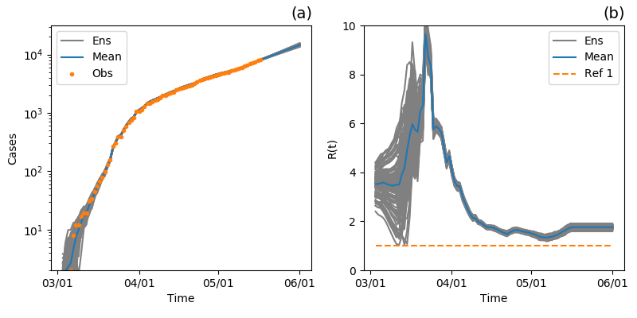

(a) Observaciones del número de infectados (puntos naranja) y el número de infectados estimados con asimilación de datos (línea celeste). Las líneas grises muestran el ensamble el cual esta representando la incerteza en la predicción. Para las fechas en las cuales aun no hay observaciones, se realiza una predicción con el conjunto de los últimos parámetros estimados y la última estimación del ensamble de estados escondidos. El primer día corresponde al 3 de Marzo.
(b) Número de reproducción estimado con la técnica de asimilación de datos y su incerteza.
 Provincia Chaco
Provincia Chaco
 Provincia Corrientes
Provincia Corrientes